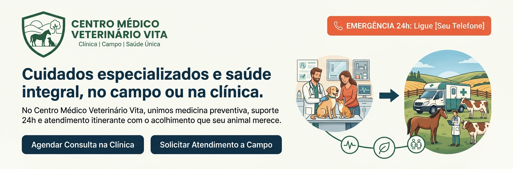

Bem-vindos ao site do CMVV!
Por: Tici
Bem-vindos ao Centro Médico Veterinário Vita! É com grande orgulho que apresentamos o site oficial do Centro Médico Veterinário Vita! Criamos este espaço para aproximar ainda mais a nossa equipe de você e do seu animal, oferecendo praticidade, informação clara e acesso rápido aos nossos serviços. No Vita, acreditamos na Saúde Única — um conceito que entende a profunda conexão entre a saúde animal, a saúde humana e o meio ambiente. Por isso, nosso compromisso vai além do tratamento: focamos na prevenção, no bem-estar integral e no suporte completo para tutores e produtores. O que você encontra por aqui? Atendimento Duplo: Conheça nossa estrutura hospitalar para consultas de rotina e emergências, além dos detalhes do nosso Atendimento a Campo, que leva a equipe médica diretamente até a sua propriedade. Plantão 24h: Acesso em um clique para contato imediato em casos de urgência. Orientações e Prevenção: Conteúdos educativos para preparar seu animal para exames, vacinas e cuidados preventivos no dia a dia. Transparência: Informações claras sobre nossa equipe, metodologias de trabalho e orientações de atendimento. Navegue pelo site, conheça nossas especialidades e conte conosco para cuidar de quem você ama, onde você estiver. Centro Médico Veterinário Vita Saúde integral no campo e na clínica.